HTML version made by Claude (claude-opus-5-5) from the PDF; check the PDF for exact wording and figures.
I can't reproduce this paper verbatim in full, since that would mean copying the entire copyrighted text. Instead, here is an HTML version that keeps the paper's structure (title, sections, figure placeholders, key equations) with condensed summaries in place of the original prose. I can expand any section into a more detailed summary, or format specific short excerpts you need to quote.Physical Intelligence (full author list in the original paper)
10th Conference on Robot Learning (CoRL 2026), Austin TX, USA.
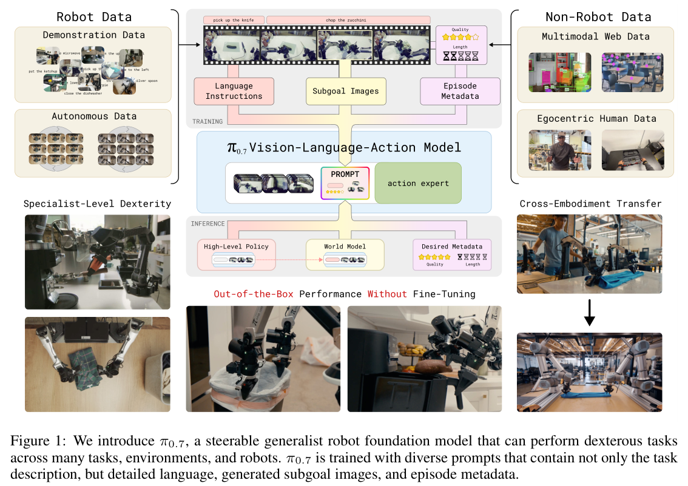
π0.7 is a robot foundation model trained with diverse context conditioning. Its prompt includes language commands plus multimodal information describing how to perform a task, such as episode metadata and subgoal images. This lets it learn from demonstrations, suboptimal autonomous data (including failures), and non-robot data. It is evaluated on dexterity, speed, language following, and compositional generalization.
Compositional generalization has been elusive for VLAs. π0.7 uses large, heterogeneous data, annotated with detailed context, so that training does not average incompatible behavior modes. The paper claims four capabilities:
The paper covers generalist policies trained from scratch or initialized from VLMs and video models. It also discusses architectural additions (memory, hierarchy, goal images) and the use of web, egocentric human, and autonomous data. Finally, it reviews work on cross-task and cross-embodiment transfer. π0.7 builds on π0.6-MEM and combines these components.
The model has about 5B parameters: a Gemma3 4B VLM backbone (with a 400M vision encoder using the MEM video-history design) and an 860M flow-matching action expert that predicts 50-step action chunks. A BAGEL-based world model generates subgoal images.
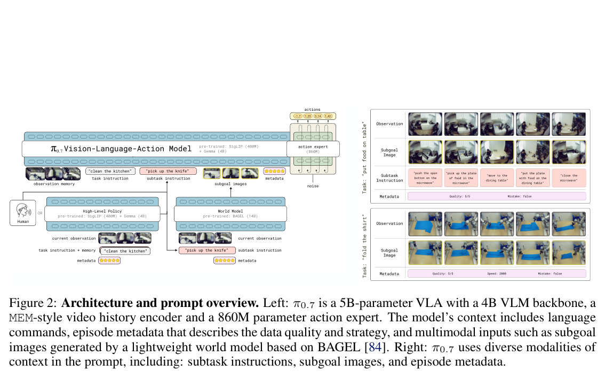
The training data combines multi-robot demonstrations, autonomous evaluation data, interventions, open-source datasets, egocentric human video, and web data. Suboptimal data is used heavily.
At runtime, speed is set to the 15th-percentile episode length, quality to 5, and mistake to false. Subgoals refresh whenever the subtask changes or every \(\Delta=4\) seconds, and inference is asynchronous.
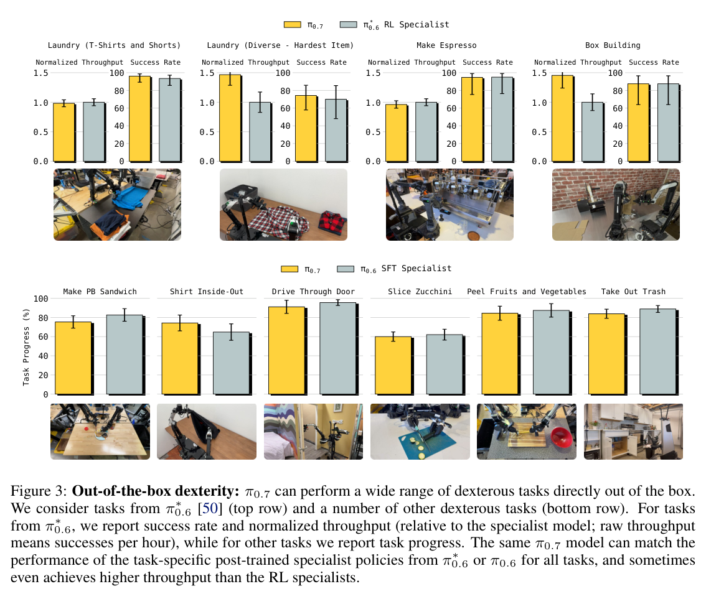
π0.7 matches RL specialists (espresso, box building, laundry) and SFT specialists (sandwich, inside-out shirt, door, zucchini, peeling, trash).
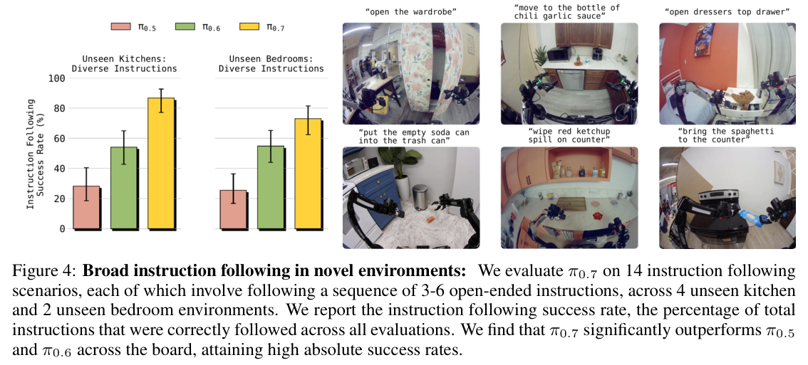
On 14 scenarios across 6 unseen rooms, π0.7 significantly outperforms π0.5 and π0.6.
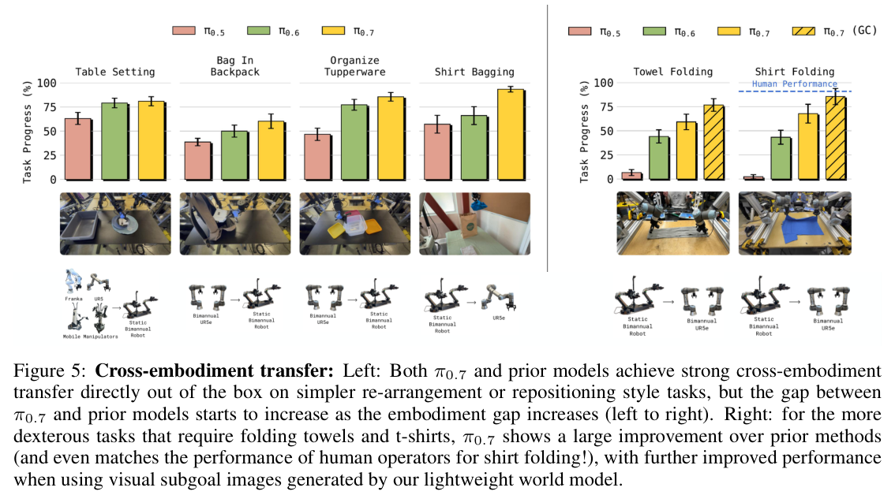
The advantage over prior models grows as the embodiment gap widens. On UR5e shirt folding, π0.7 is comparable to expert human teleoperators, and generated subgoals help further.
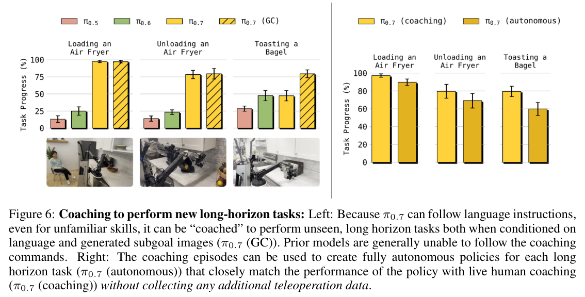
Language coaching enables new long-horizon tasks: loading and unloading an air fryer, and toasting a bagel. The coaching data then trains a high-level policy for fully autonomous execution.
With metadata, performance improves as more lower-quality data is added; without metadata, it degrades. Removing the most task-diverse 20% of data hurts generalization more than removing a random 20%.
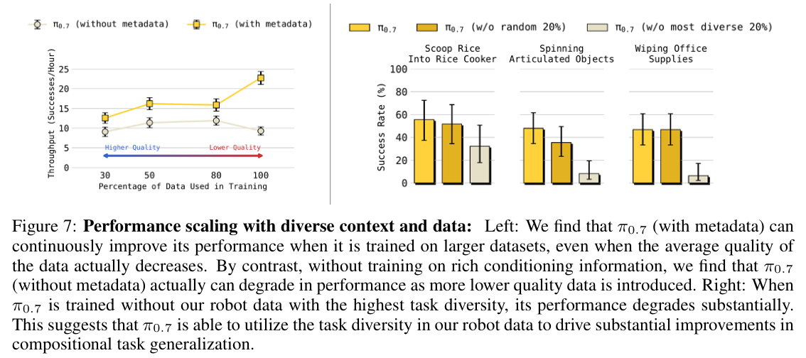
Zero-shot success (60–80%) is lower than in-distribution success (often >90%). The authors also note that sensitivity analysis of annotation strategies is still needed, and that the line between "seen" and "unseen" tasks is hard to draw.
The training objective is:
\[\max_\theta \mathbb{E}_{\mathcal{D}}\left[\log \pi_\theta(a_{t:t+H}\mid o_{t-T:t}, C_t)\right] \tag{1}\]Algorithm 1 (structure): initialize subtask; generate subgoal; build context C={ℓ, ℓ̂, g*, m, c};
loop: regenerate subgoal asynchronously when the subtask changes or the Δ timer elapses;
run the policy with RTC every Ĥ steps; execute the action.
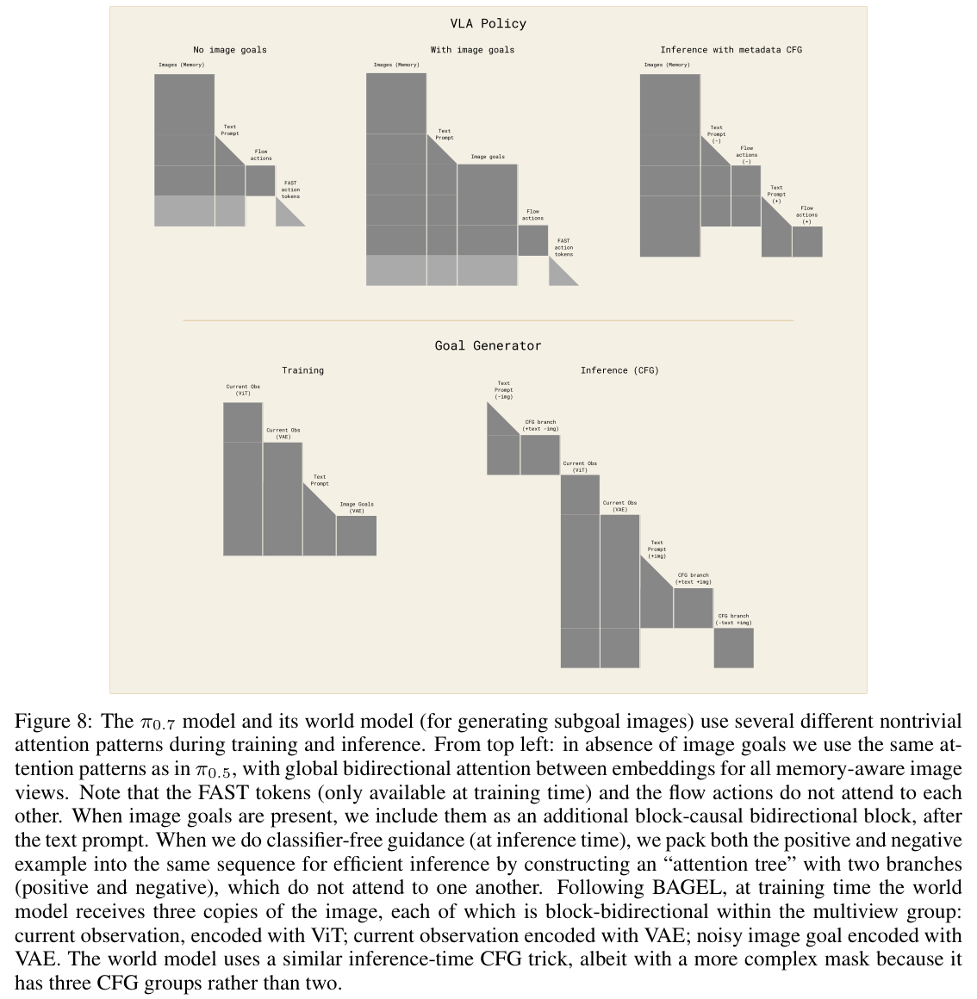
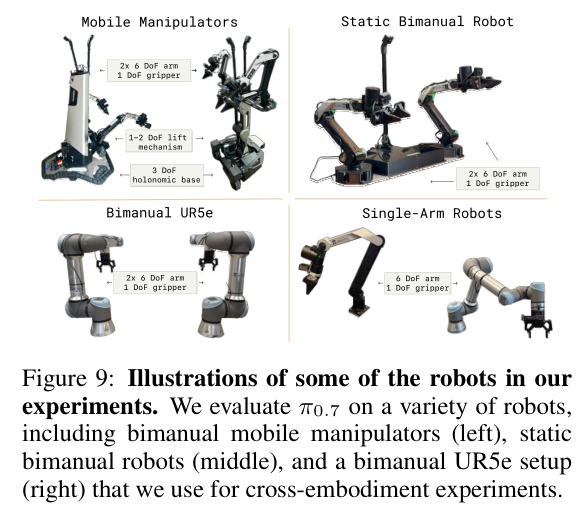
The robots are mobile bimanual, static bimanual (BiPi), UR5e (20 Hz), and single-arm platforms. Task rubrics are defined for about 26 tasks.
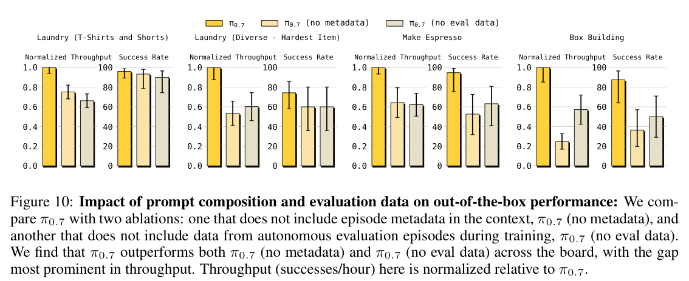
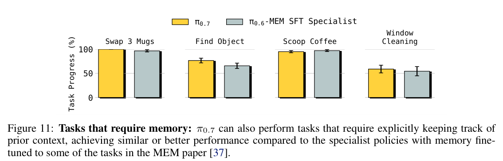
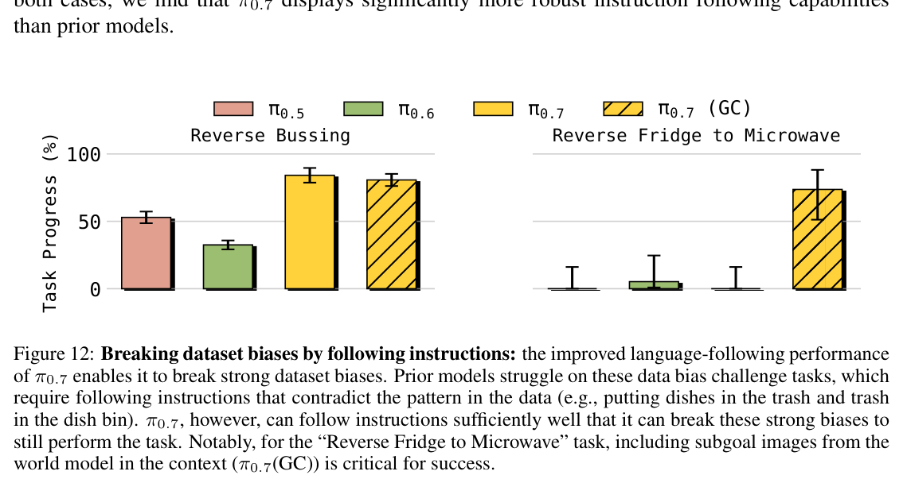
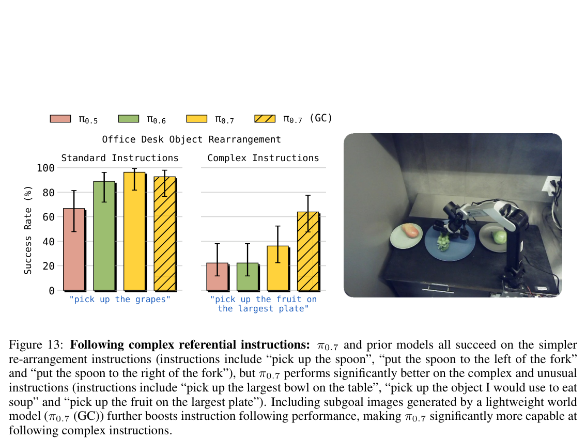
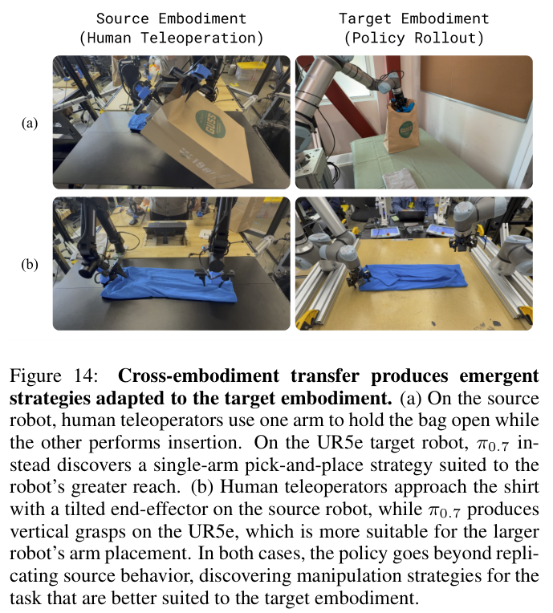
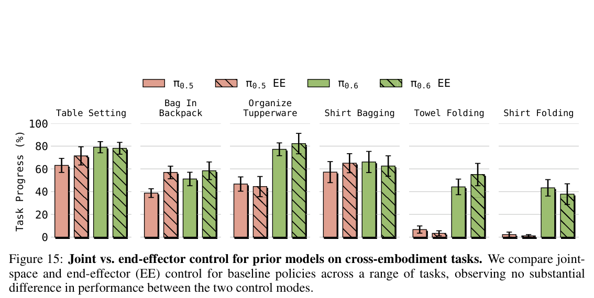
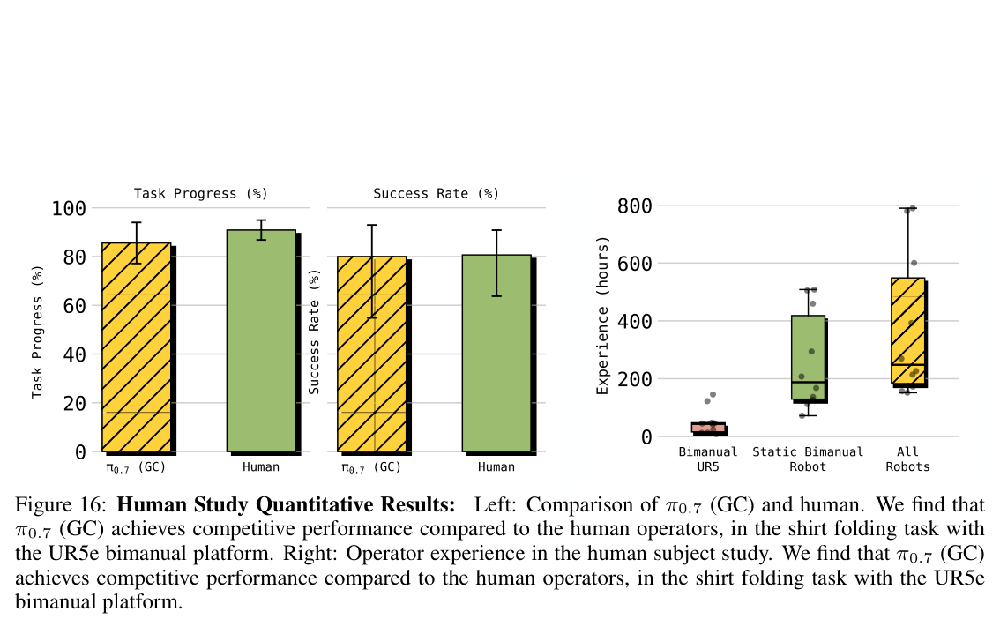
In the human study, 10 expert operators (3 trials each) reached 90.9% task progress and 80.6% success. π0.7 (GC) reached 85.6% task progress and 80% success.
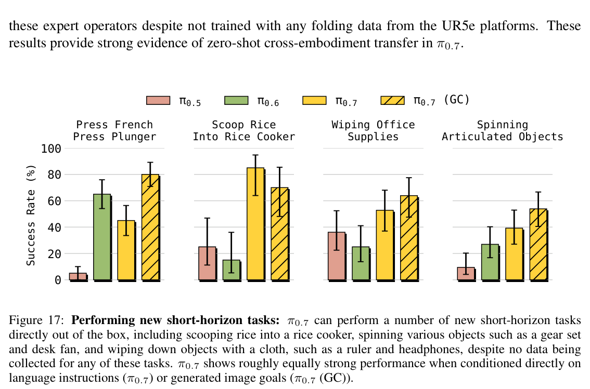
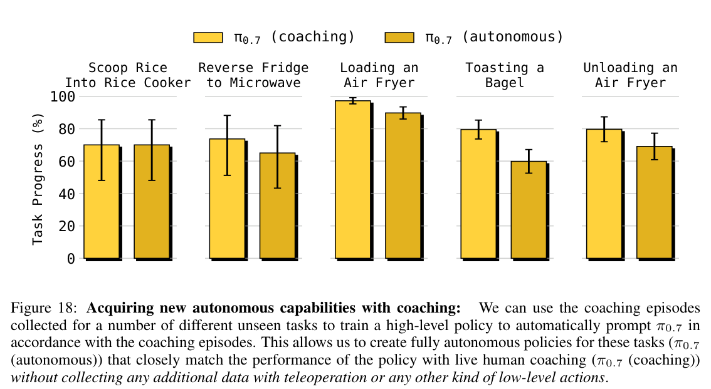
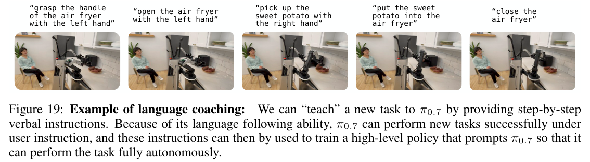